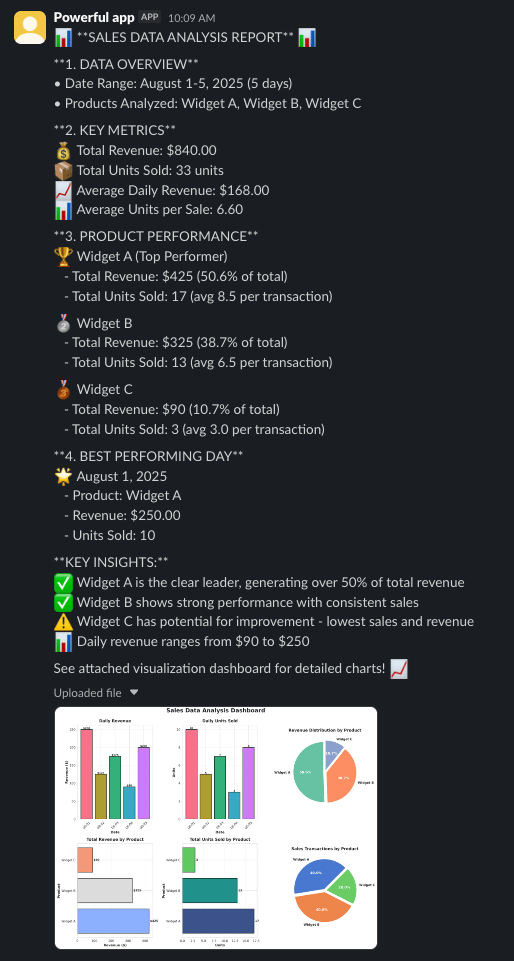

构建数据分析智能体
构建一个代理来分析数据文件、生成可视化并共享结果
概述
本指南演示如何使用深度智能体构建数据分析代理。数据分析任务通常需要多步骤推理、代码执行以及处理脚本、报告和绘图等工件，而深度智能体旨在处理这些功能。
您构建的代理将：
- 接受 CSV 文件进行分析
- 使用选择加入的待办事项列表来计划和跟踪分析步骤
- 执行探索性数据分析并生成可视化
- 将结果分享到 Slack 频道
Slack 集成是可选的。可以修改代理以在本地保存工件或通过其他渠道共享结果。
关键概念
本教程涵盖：
- 后端 用于沙盒代码执行
- 用于外部集成的自定义工具
- 选择加入 任务计划 和
TodoListMiddleware
设置
安装
安装核心依赖项：
pip install deepagents
可选依赖项
对于本教程，我们将使用：
- Slack Python SDK 用于共享结果（令牌设置）
- 用于执行代码的 LangSmith 沙箱
pip install "langsmith[sandbox]" slack-sdk
这些服务是可选的，但强烈建议将沙盒环境用于任何生产用途。您也可以使用本地 shell 后端（考虑到重要的安全考虑）或直接从后端下载工件。
兰·史密斯
您使用 LangChain 构建的许多应用程序将包含多个步骤，并多次调用 LLM 调用。随着这些应用程序变得越来越复杂，能够检查链或代理内部到底发生了什么变得至关重要。最好的方法是使用 LangSmith。
在上面的链接注册后，请确保设置环境变量以开始记录跟踪：
export LANGSMITH_TRACING="true"
export LANGSMITH_API_KEY="..."
或者，在 Python 中设置它们：
import getpass
import os
os.environ["LANGSMITH_TRACING"] = "true"
os.environ["LANGSMITH_API_KEY"] = getpass.getpass()
设置后端
深度智能体使用后端 在沙盒环境中执行代码。
以下示例使用 LangSmith 沙箱。对于其他提供商，请参阅可用提供商。
LangSmith
pip install "langsmith[sandbox]"
uv add "langsmith[sandbox]"
from deepagents.backends.langsmith import LangSmithSandbox
from langsmith.sandbox import SandboxClient
client = SandboxClient()
ls_sandbox = client.create_sandbox()
backend = LangSmithSandbox(sandbox=ls_sandbox)
本地外壳
该后端提供不受限制的文件系统和 shell 访问。仅在受控环境中使用以进行开发和测试。有关更多详细信息，请参阅安全注意事项。
from deepagents.backends import LocalShellBackend
backend = LocalShellBackend(
root_dir=".",
virtual_mode=True,
env={"PATH": "/usr/bin:/bin"},
)
代理核心
pip install langchain-agentcore-codeinterpreter
uv add langchain-agentcore-codeinterpreter
from bedrock_agentcore.tools.code_interpreter_client import CodeInterpreter
from langchain_agentcore_codeinterpreter import AgentCoreSandbox
interpreter = CodeInterpreter(region="us-west-2")
interpreter.start()
backend = AgentCoreSandbox(interpreter=interpreter)
代托纳
pip install langchain-daytona
uv add langchain-daytona
from daytona import Daytona
from langchain_daytona import DaytonaSandbox
sandbox = Daytona().create()
backend = DaytonaSandbox(sandbox=sandbox)
验证沙箱是否准备就绪：
result = backend.execute("echo ready")
print(result)
# ExecuteResponse(output='ready', exit_code=0, ...)
E2B
pip install langchain-e2b
uv add langchain-e2b
from e2b import Sandbox
from langchain_e2b import E2BSandbox
e2b_sandbox = Sandbox.create()
backend = E2BSandbox(sandbox=e2b_sandbox)
莫代尔
import modal
from langchain_modal import ModalSandbox
app = modal.App.lookup("your-app")
modal_sandbox = modal.Sandbox.create(app=app)
backend = ModalSandbox(sandbox=modal_sandbox)
运行循环
pip install langchain-runloop
uv add langchain-runloop
from runloop_api_client import RunloopSDK
from langchain_runloop import RunloopSandbox
api_key = "..."
client = RunloopSDK(bearer_token=api_key)
devbox = client.devbox.create()
backend = RunloopSandbox(devbox=devbox)
上传样本数据
创建示例销售数据并将其上传到后端：
import csv
import io
# Create sample sales data
data = [
["Date", "Product", "Units Sold", "Revenue"],
["2025-08-01", "Widget A", 10, 250],
["2025-08-02", "Widget B", 5, 125],
["2025-08-03", "Widget A", 7, 175],
["2025-08-04", "Widget C", 3, 90],
["2025-08-05", "Widget B", 8, 200],
]
# Convert to CSV bytes
text_buf = io.StringIO()
writer = csv.writer(text_buf)
writer.writerows(data)
csv_bytes = text_buf.getvalue().encode("utf-8")
text_buf.close()
# Upload to backend
backend.upload_files([("/root/data/sales_data.csv", csv_bytes)])
实施自定义工具
数据分析任务可能会产生工件，例如报告或绘图。以下简单的工具使用backend.download_files下载它们，然后使用Slack SDK上传它们。我们还可以要求我们的代理列出相关文件路径而不是上传它们，以便感兴趣的各方可以根据需要单独获取它们。
import os
from langchain.tools import tool
from slack_sdk import WebClient
slack_token = os.environ["SLACK_USER_TOKEN"]
slack_client = WebClient(token=slack_token)
channel = "C0123456ABC" # specify your own channel here
@tool(parse_docstring=True)
def slack_send_message(text: str, file_path: str | None = None) -> str:
"""Send message, optionally including attachments such as images.
Args:
text: (str) text content of the message
file_path: (str) file path of attachment in the filesystem.
"""
if not file_path:
slack_client.chat_postMessage(channel=channel, text=text)
else:
fp = backend.download_files([file_path])
slack_client.files_upload_v2(
channel=channel,
content=fp[0].content,
initial_comment=text,
)
return "Message sent."
通常，避免向沙箱添加凭据和其他机密是一种好的做法。在这里，我们在工具中管理沙箱之外的 Slack 令牌。
启用任务计划
任务计划 已选择加入。数据分析通常涉及漫长的多步骤工作，因此在创建代理时传递 TodoListMiddleware。这为代理提供了 write_todos 工具，用于跟踪探索性分析、可视化和共享步骤。
from langchain.agents.middleware import TodoListMiddleware
将此中间件包含在下一节的 create_deep_agent 调用中。
运行代理
让我们实例化一个代理：
from langchain_core.utils.uuid import uuid7
from deepagents import create_deep_agent
from langchain.agents.middleware import TodoListMiddleware
from langgraph.checkpoint.memory import InMemorySaver
checkpointer = InMemorySaver()
agent = create_deep_agent(
model="google_genai:gemini-3.6-flash",
tools=[slack_send_message],
backend=backend,
checkpointer=checkpointer,
middleware=[TodoListMiddleware()],
)
thread_id = str(uuid7())
config = {"configurable": {"thread_id": thread_id}}
我们包括：
- 【型号选择】(/oss/python/deepagents/customization#model)
- 我们的定制工具
- 后端
- 支持多轮对话的检查点
TodoListMiddleware用于选择加入任务计划
现在让我们调用我们的代理。
input_message = {
"role": "user",
"content": (
"Analyze ./data/sales_data.csv in the current dir and generate a beautiful plot. "
"When finished, send your analysis and the plot to Slack using the tool."
),
}
stream = agent.stream_events(
{"messages": [input_message]},
config,
version="v3",
)
for snapshot in stream.values:
snapshot["messages"][-1].pretty_print()
================================== Ai Message ==================================
[{'text': "I'll help you analyze the sales data and create a beautiful plot, then send the results to Slack. Let me start by exploring the data.", 'type': 'text'}, {'id': 'toolu_01LRot5h6WkhdpDQ1SG6EQGQ', 'input': {'file_path': './data/sales_data.csv'}, 'name': 'read_file', 'type': 'tool_use'}]
Tool Calls:
read_file (toolu_01LRot5h6WkhdpDQ1SG6EQGQ)
Call ID: toolu_01LRot5h6WkhdpDQ1SG6EQGQ
Args:
file_path: ./data/sales_data.csv
================================= Tool Message =================================
Name: read_file
Error: File '/data/sales_data.csv' not found
================================== Ai Message ==================================
[{'text': 'Let me check the current directory structure first:', 'type': 'text'}, {'id': 'toolu_018DSeF8Dx714Dh2M5vJ1JuK', 'input': {'command': 'pwd'}, 'name': 'execute', 'type': 'tool_use'}, {'id': 'toolu_01As782aRsVB3mJpKPKNwg9c', 'input': {'path': '/'}, 'name': 'ls', 'type': 'tool_use'}]
Tool Calls:
execute (toolu_018DSeF8Dx714Dh2M5vJ1JuK)
Call ID: toolu_018DSeF8Dx714Dh2M5vJ1JuK
Args:
command: pwd
ls (toolu_01As782aRsVB3mJpKPKNwg9c)
Call ID: toolu_01As782aRsVB3mJpKPKNwg9c
Args:
path: /
================================= Tool Message =================================
Name: execute
/root
[Command succeeded with exit code 0]
================================= Tool Message =================================
Name: ls
['/bin', '/boot', '/dev', '/etc', '/home', '/lib', '/lib64', '/media', '/mnt', '/opt', '/proc', '/root', '/run', '/sbin', '/srv', '/sys', '/tmp', '/usr', '/var', '/.dockerenv']
================================== Ai Message ==================================
[{'id': 'toolu_01Sv4ut1P2XFsjrzVmQbJLpr', 'input': {'path': '/root'}, 'name': 'ls', 'type': 'tool_use'}]
Tool Calls:
ls (toolu_01Sv4ut1P2XFsjrzVmQbJLpr)
Call ID: toolu_01Sv4ut1P2XFsjrzVmQbJLpr
Args:
path: /root
================================= Tool Message =================================
Name: ls
['/root/.bash_logout', '/root/.bashrc', '/root/.profile', '/root/data']
================================== Ai Message ==================================
[{'text': "Great! I can see there's a data directory. Let me check its contents:", 'type': 'text'}, {'id': 'toolu_01WN6V9RZjGGoDXzuWdEgB1z', 'input': {'path': '/root/data'}, 'name': 'ls', 'type': 'tool_use'}]
Tool Calls:
ls (toolu_01WN6V9RZjGGoDXzuWdEgB1z)
Call ID: toolu_01WN6V9RZjGGoDXzuWdEgB1z
Args:
path: /root/data
================================= Tool Message =================================
Name: ls
['/root/data/sales_data.csv']
================================== Ai Message ==================================
[{'text': 'Perfect! Now let me read the sales data:', 'type': 'text'}, {'id': 'toolu_01RFmneg7mua1G5csH3rH2Zq', 'input': {'file_path': '/root/data/sales_data.csv'}, 'name': 'read_file', 'type': 'tool_use'}]
Tool Calls:
read_file (toolu_01RFmneg7mua1G5csH3rH2Zq)
Call ID: toolu_01RFmneg7mua1G5csH3rH2Zq
Args:
file_path: /root/data/sales_data.csv
================================= Tool Message =================================
Name: read_file
1 Date,Product,Units Sold,Revenue
2 2025-08-01,Widget A,10,250
3 2025-08-02,Widget B,5,125
4 2025-08-03,Widget A,7,175
5 2025-08-04,Widget C,3,90
6 2025-08-05,Widget B,8,200
================================== Ai Message ==================================
[{'text': "Excellent! I can see the sales data. Now I'll create a Python script to analyze the data and generate a beautiful plot. Let me create a comprehensive analysis with visualizations:", 'type': 'text'}, {'id': 'toolu_01JcBjEXgPpCPuaGxn9ALwMg', 'input': {'file_path': '/root/analyze_sales.py', 'content': 'import pandas as pd\nimport matplotlib.pyplot as plt\nimport seaborn as sns\nfrom datetime import datetime\n\n# Set style for beautiful plots\nsns.set_style("whitegrid")\nplt.rcParams[\'figure.figsize\'] = (14, 10)\nplt.rcParams[\'font.size\'] = 11\n\n# Read the data\ndf = pd.read_csv(\'/root/data/sales_data.csv\')\ndf[\'Date\'] = pd.to_datetime(df[\'Date\'])\n\n# Analysis\nprint("=" * 60)\nprint("SALES DATA ANALYSIS REPORT")\nprint("=" * 60)\nprint("\\n1. DATA OVERVIEW")\nprint("-" * 60)\nprint(f"Date Range: {df[\'Date\'].min().strftime(\'%Y-%m-%d\')} to {df[\'Date\'].max().strftime(\'%Y-%m-%d\')}")\nprint(f"Total Records: {len(df)}")\nprint(f"Products: {\', \'.join(df[\'Product\'].unique())}")\n\nprint("\\n2. SUMMARY STATISTICS")\nprint("-" * 60)\nprint(f"Total Revenue: ${df[\'Revenue\'].sum():,.2f}")\nprint(f"Total Units Sold: {df[\'Units Sold\'].sum()}")\nprint(f"Average Daily Revenue: ${df[\'Revenue\'].mean():.2f}")\nprint(f"Average Units per Sale: {df[\'Units Sold\'].mean():.2f}")\n\nprint("\\n3. PRODUCT PERFORMANCE")\nprint("-" * 60)\nproduct_stats = df.groupby(\'Product\').agg({\n \'Revenue\': [\'sum\', \'mean\'],\n \'Units Sold\': [\'sum\', \'mean\']\n}).round(2)\nprint(product_stats)\n\nprint("\\n4. BEST PERFORMING DAY")\nprint("-" * 60)\nbest_day = df.loc[df[\'Revenue\'].idxmax()]\nprint(f"Date: {best_day[\'Date\'].strftime(\'%Y-%m-%d\')}")\nprint(f"Product: {best_day[\'Product\']}")\nprint(f"Revenue: ${best_day[\'Revenue\']:.2f}")\nprint(f"Units Sold: {best_day[\'Units Sold\']}")\n\n# Create visualizations\nfig = plt.figure(figsize=(16, 12))\nfig.suptitle(\'Sales Data Analysis Dashboard\', fontsize=20, fontweight=\'bold\', y=0.995)\n\n# 1. Revenue by Date\nax1 = plt.subplot(2, 3, 1)\ncolors = sns.color_palette("husl", len(df))\nbars = ax1.bar(df[\'Date\'].dt.strftime(\'%m-%d\'), df[\'Revenue\'], color=colors, edgecolor=\'black\', linewidth=1.5)\nax1.set_title(\'Daily Revenue\', fontsize=14, fontweight=\'bold\', pad=10)\nax1.set_xlabel(\'Date\', fontsize=12, fontweight=\'bold\')\nax1.set_ylabel(\'Revenue ($)\', fontsize=12, fontweight=\'bold\')\nax1.grid(axis=\'y\', alpha=0.3)\nfor bar in bars:\n height = bar.get_height()\n ax1.text(bar.get_x() + bar.get_width()/2., height,\n f\'${int(height)}\',\n ha=\'center\', va=\'bottom\', fontsize=9, fontweight=\'bold\')\nplt.setp(ax1.xaxis.get_majorticklabels(), rotation=45)\n\n# 2. Units Sold by Date\nax2 = plt.subplot(2, 3, 2)\nbars = ax2.bar(df[\'Date\'].dt.strftime(\'%m-%d\'), df[\'Units Sold\'], color=colors, edgecolor=\'black\', linewidth=1.5)\nax2.set_title(\'Daily Units Sold\', fontsize=14, fontweight=\'bold\', pad=10)\nax2.set_xlabel(\'Date\', fontsize=12, fontweight=\'bold\')\nax2.set_ylabel(\'Units\', fontsize=12, fontweight=\'bold\')\nax2.grid(axis=\'y\', alpha=0.3)\nfor bar in bars:\n height = bar.get_height()\n ax2.text(bar.get_x() + bar.get_width()/2., height,\n f\'{int(height)}\',\n ha=\'center\', va=\'bottom\', fontsize=9, fontweight=\'bold\')\nplt.setp(ax2.xaxis.get_majorticklabels(), rotation=45)\n\n# 3. Revenue by Product (Pie Chart)\nax3 = plt.subplot(2, 3, 3)\nproduct_revenue = df.groupby(\'Product\')[\'Revenue\'].sum()\ncolors_pie = sns.color_palette("Set2", len(product_revenue))\nwedges, texts, autotexts = ax3.pie(product_revenue, labels=product_revenue.index, autopct=\'%1.1f%%\',\n colors=colors_pie, startangle=90, textprops={\'fontsize\': 11, \'fontweight\': \'bold\'},\n explode=[0.05] * len(product_revenue))\nax3.set_title(\'Revenue Distribution by Product\', fontsize=14, fontweight=\'bold\', pad=10)\nfor autotext in autotexts:\n autotext.set_color(\'white\')\n autotext.set_fontsize(12)\n\n# 4. Total Revenue by Product (Bar Chart)\nax4 = plt.subplot(2, 3, 4)\nproduct_revenue_sorted = product_revenue.sort_values(ascending=False)\ncolors_product = sns.color_palette("coolwarm", len(product_revenue_sorted))\nbars = ax4.barh(product_revenue_sorted.index, product_revenue_sorted.values, color=colors_product, edgecolor=\'black\', linewidth=1.5)\nax4.set_title(\'Total Revenue by Product\', fontsize=14, fontweight=\'bold\', pad=10)\nax4.set_xlabel(\'Revenue ($)\', fontsize=12, fontweight=\'bold\')\nax4.set_ylabel(\'Product\', fontsize=12, fontweight=\'bold\')\nax4.grid(axis=\'x\', alpha=0.3)\nfor i, (product, revenue) in enumerate(product_revenue_sorted.items()):\n ax4.text(revenue, i, f\' ${int(revenue)}\', va=\'center\', fontsize=10, fontweight=\'bold\')\n\n# 5. Total Units Sold by Product\nax5 = plt.subplot(2, 3, 5)\nproduct_units = df.groupby(\'Product\')[\'Units Sold\'].sum().sort_values(ascending=False)\ncolors_units = sns.color_palette("viridis", len(product_units))\nbars = ax5.barh(product_units.index, product_units.values, color=colors_units, edgecolor=\'black\', linewidth=1.5)\nax5.set_title(\'Total Units Sold by Product\', fontsize=14, fontweight=\'bold\', pad=10)\nax5.set_xlabel(\'Units\', fontsize=12, fontweight=\'bold\')\nax5.set_ylabel(\'Product\', fontsize=12, fontweight=\'bold\')\nax5.grid(axis=\'x\', alpha=0.3)\nfor i, (product, units) in enumerate(product_units.items()):\n ax5.text(units, i, f\' {int(units)}\', va=\'center\', fontsize=10, fontweight=\'bold\')\n\n# 6. Product Distribution\nax6 = plt.subplot(2, 3, 6)\nproduct_counts = df[\'Product\'].value_counts()\ncolors_count = sns.color_palette("muted", len(product_counts))\nwedges, texts, autotexts = ax6.pie(product_counts, labels=product_counts.index, autopct=\'%1.1f%%\',\n colors=colors_count, startangle=45, textprops={\'fontsize\': 11, \'fontweight\': \'bold\'},\n explode=[0.05] * len(product_counts))\nax6.set_title(\'Sales Transactions by Product\', fontsize=14, fontweight=\'bold\', pad=10)\nfor autotext in autotexts:\n autotext.set_color(\'white\')\n autotext.set_fontsize(12)\n\nplt.tight_layout()\nplt.savefig(\'/root/sales_analysis_plot.png\', dpi=300, bbox_inches=\'tight\', facecolor=\'white\')\nprint("\\n" + "=" * 60)\nprint("Plot saved as: sales_analysis_plot.png")\nprint("=" * 60)\n'}, 'name': 'write_file', 'type': 'tool_use'}]
Tool Calls:
write_file (toolu_01JcBjEXgPpCPuaGxn9ALwMg)
Call ID: toolu_01JcBjEXgPpCPuaGxn9ALwMg
Args:
file_path: /root/analyze_sales.py
content: import pandas as pd
import matplotlib.pyplot as plt
import seaborn as sns
from datetime import datetime
# Set style for beautiful plots
sns.set_style("whitegrid")
plt.rcParams['figure.figsize'] = (14, 10)
plt.rcParams['font.size'] = 11
# Read the data
df = pd.read_csv('/root/data/sales_data.csv')
df['Date'] = pd.to_datetime(df['Date'])
# Analysis
print("=" * 60)
print("SALES DATA ANALYSIS REPORT")
print("=" * 60)
print("\n1. DATA OVERVIEW")
print("-" * 60)
print(f"Date Range: {df['Date'].min().strftime('%Y-%m-%d')} to {df['Date'].max().strftime('%Y-%m-%d')}")
print(f"Total Records: {len(df)}")
print(f"Products: {', '.join(df['Product'].unique())}")
print("\n2. SUMMARY STATISTICS")
print("-" * 60)
print(f"Total Revenue: ${df['Revenue'].sum():,.2f}")
print(f"Total Units Sold: {df['Units Sold'].sum()}")
print(f"Average Daily Revenue: ${df['Revenue'].mean():.2f}")
print(f"Average Units per Sale: {df['Units Sold'].mean():.2f}")
print("\n3. PRODUCT PERFORMANCE")
print("-" * 60)
product_stats = df.groupby('Product').agg({
'Revenue': ['sum', 'mean'],
'Units Sold': ['sum', 'mean']
}).round(2)
print(product_stats)
print("\n4. BEST PERFORMING DAY")
print("-" * 60)
best_day = df.loc[df['Revenue'].idxmax()]
print(f"Date: {best_day['Date'].strftime('%Y-%m-%d')}")
print(f"Product: {best_day['Product']}")
print(f"Revenue: ${best_day['Revenue']:.2f}")
print(f"Units Sold: {best_day['Units Sold']}")
# Create visualizations
fig = plt.figure(figsize=(16, 12))
fig.suptitle('Sales Data Analysis Dashboard', fontsize=20, fontweight='bold', y=0.995)
# 1. Revenue by Date
ax1 = plt.subplot(2, 3, 1)
colors = sns.color_palette("husl", len(df))
bars = ax1.bar(df['Date'].dt.strftime('%m-%d'), df['Revenue'], color=colors, edgecolor='black', linewidth=1.5)
ax1.set_title('Daily Revenue', fontsize=14, fontweight='bold', pad=10)
ax1.set_xlabel('Date', fontsize=12, fontweight='bold')
ax1.set_ylabel('Revenue ($)', fontsize=12, fontweight='bold')
ax1.grid(axis='y', alpha=0.3)
for bar in bars:
height = bar.get_height()
ax1.text(bar.get_x() + bar.get_width()/2., height,
f'${int(height)}',
ha='center', va='bottom', fontsize=9, fontweight='bold')
plt.setp(ax1.xaxis.get_majorticklabels(), rotation=45)
# 2. Units Sold by Date
ax2 = plt.subplot(2, 3, 2)
bars = ax2.bar(df['Date'].dt.strftime('%m-%d'), df['Units Sold'], color=colors, edgecolor='black', linewidth=1.5)
ax2.set_title('Daily Units Sold', fontsize=14, fontweight='bold', pad=10)
ax2.set_xlabel('Date', fontsize=12, fontweight='bold')
ax2.set_ylabel('Units', fontsize=12, fontweight='bold')
ax2.grid(axis='y', alpha=0.3)
for bar in bars:
height = bar.get_height()
ax2.text(bar.get_x() + bar.get_width()/2., height,
f'{int(height)}',
ha='center', va='bottom', fontsize=9, fontweight='bold')
plt.setp(ax2.xaxis.get_majorticklabels(), rotation=45)
# 3. Revenue by Product (Pie Chart)
ax3 = plt.subplot(2, 3, 3)
product_revenue = df.groupby('Product')['Revenue'].sum()
colors_pie = sns.color_palette("Set2", len(product_revenue))
wedges, texts, autotexts = ax3.pie(product_revenue, labels=product_revenue.index, autopct='%1.1f%%',
colors=colors_pie, startangle=90, textprops={'fontsize': 11, 'fontweight': 'bold'},
explode=[0.05] * len(product_revenue))
ax3.set_title('Revenue Distribution by Product', fontsize=14, fontweight='bold', pad=10)
for autotext in autotexts:
autotext.set_color('white')
autotext.set_fontsize(12)
# 4. Total Revenue by Product (Bar Chart)
ax4 = plt.subplot(2, 3, 4)
product_revenue_sorted = product_revenue.sort_values(ascending=False)
colors_product = sns.color_palette("coolwarm", len(product_revenue_sorted))
bars = ax4.barh(product_revenue_sorted.index, product_revenue_sorted.values, color=colors_product, edgecolor='black', linewidth=1.5)
ax4.set_title('Total Revenue by Product', fontsize=14, fontweight='bold', pad=10)
ax4.set_xlabel('Revenue ($)', fontsize=12, fontweight='bold')
ax4.set_ylabel('Product', fontsize=12, fontweight='bold')
ax4.grid(axis='x', alpha=0.3)
for i, (product, revenue) in enumerate(product_revenue_sorted.items()):
ax4.text(revenue, i, f' ${int(revenue)}', va='center', fontsize=10, fontweight='bold')
# 5. Total Units Sold by Product
ax5 = plt.subplot(2, 3, 5)
product_units = df.groupby('Product')['Units Sold'].sum().sort_values(ascending=False)
colors_units = sns.color_palette("viridis", len(product_units))
bars = ax5.barh(product_units.index, product_units.values, color=colors_units, edgecolor='black', linewidth=1.5)
ax5.set_title('Total Units Sold by Product', fontsize=14, fontweight='bold', pad=10)
ax5.set_xlabel('Units', fontsize=12, fontweight='bold')
ax5.set_ylabel('Product', fontsize=12, fontweight='bold')
ax5.grid(axis='x', alpha=0.3)
for i, (product, units) in enumerate(product_units.items()):
ax5.text(units, i, f' {int(units)}', va='center', fontsize=10, fontweight='bold')
# 6. Product Distribution
ax6 = plt.subplot(2, 3, 6)
product_counts = df['Product'].value_counts()
colors_count = sns.color_palette("muted", len(product_counts))
wedges, texts, autotexts = ax6.pie(product_counts, labels=product_counts.index, autopct='%1.1f%%',
colors=colors_count, startangle=45, textprops={'fontsize': 11, 'fontweight': 'bold'},
explode=[0.05] * len(product_counts))
ax6.set_title('Sales Transactions by Product', fontsize=14, fontweight='bold', pad=10)
for autotext in autotexts:
autotext.set_color('white')
autotext.set_fontsize(12)
plt.tight_layout()
plt.savefig('/root/sales_analysis_plot.png', dpi=300, bbox_inches='tight', facecolor='white')
print("\n" + "=" * 60)
print("Plot saved as: sales_analysis_plot.png")
print("=" * 60)
================================= Tool Message =================================
Name: write_file
Updated file /root/analyze_sales.py
================================== Ai Message ==================================
[{'text': 'Now let me run the analysis script:', 'type': 'text'}, {'id': 'toolu_015xkZr21TuzCTEKGzSqgnbp', 'input': {'command': 'cd /root && python analyze_sales.py'}, 'name': 'execute', 'type': 'tool_use'}]
Tool Calls:
execute (toolu_015xkZr21TuzCTEKGzSqgnbp)
Call ID: toolu_015xkZr21TuzCTEKGzSqgnbp
Args:
command: cd /root && python analyze_sales.py
================================= Tool Message =================================
Name: execute
============================================================
SALES DATA ANALYSIS REPORT
============================================================
1. DATA OVERVIEW
------------------------------------------------------------
Date Range: 2025-08-01 to 2025-08-05
Total Records: 5
Products: Widget A, Widget B, Widget C
2. SUMMARY STATISTICS
------------------------------------------------------------
Total Revenue: $840.00
Total Units Sold: 33
Average Daily Revenue: $168.00
Average Units per Sale: 6.60
3. PRODUCT PERFORMANCE
------------------------------------------------------------
Revenue Units Sold
sum mean sum mean
Product
Widget A 425 212.5 17 8.5
Widget B 325 162.5 13 6.5
Widget C 90 90.0 3 3.0
4. BEST PERFORMING DAY
------------------------------------------------------------
Date: 2025-08-01
Product: Widget A
Revenue: $250.00
Units Sold: 10
============================================================
Plot saved as: sales_analysis_plot.png
============================================================
[Command succeeded with exit code 0]
================================== Ai Message ==================================
[{'text': 'Perfect! The analysis is complete and the plot has been generated. Now let me send both the analysis and the plot to Slack:', 'type': 'text'}, {'id': 'toolu_01Qust5a8DECKPZuU9pBBvkz', 'input': {'text': '📊 **SALES DATA ANALYSIS REPORT** 📊\n\n**1. DATA OVERVIEW**\n• Date Range: August 1-5, 2025 (5 days)\n• Products Analyzed: Widget A, Widget B, Widget C\n\n**2. KEY METRICS**\n💰 Total Revenue: $840.00\n📦 Total Units Sold: 33 units\n📈 Average Daily Revenue: $168.00\n📊 Average Units per Sale: 6.60\n\n**3. PRODUCT PERFORMANCE**\n🏆 Widget A (Top Performer)\n - Total Revenue: $425 (50.6% of total)\n - Total Units Sold: 17 (avg 8.5 per transaction)\n\n🥈 Widget B\n - Total Revenue: $325 (38.7% of total)\n - Total Units Sold: 13 (avg 6.5 per transaction)\n\n🥉 Widget C\n - Total Revenue: $90 (10.7% of total)\n - Total Units Sold: 3 (avg 3.0 per transaction)\n\n**4. BEST PERFORMING DAY**\n🌟 August 1, 2025\n - Product: Widget A\n - Revenue: $250.00\n - Units Sold: 10\n\n**KEY INSIGHTS:**\n✅ Widget A is the clear leader, generating over 50% of total revenue\n✅ Widget B shows strong performance with consistent sales\n⚠️ Widget C has potential for improvement - lowest sales and revenue\n📊 Daily revenue ranges from $90 to $250\n\nSee attached visualization dashboard for detailed charts! 📈', 'file_path': '/root/sales_analysis_plot.png'}, 'name': 'slack_send_message', 'type': 'tool_use'}]
Tool Calls:
slack_send_message (toolu_01Qust5a8DECKPZuU9pBBvkz)
Call ID: toolu_01Qust5a8DECKPZuU9pBBvkz
Args:
text: 📊 **SALES DATA ANALYSIS REPORT** 📊
**1. DATA OVERVIEW**
• Date Range: August 1-5, 2025 (5 days)
• Products Analyzed: Widget A, Widget B, Widget C
**2. KEY METRICS**
💰 Total Revenue: $840.00
📦 Total Units Sold: 33 units
📈 Average Daily Revenue: $168.00
📊 Average Units per Sale: 6.60
**3. PRODUCT PERFORMANCE**
🏆 Widget A (Top Performer)
- Total Revenue: $425 (50.6% of total)
- Total Units Sold: 17 (avg 8.5 per transaction)
🥈 Widget B
- Total Revenue: $325 (38.7% of total)
- Total Units Sold: 13 (avg 6.5 per transaction)
🥉 Widget C
- Total Revenue: $90 (10.7% of total)
- Total Units Sold: 3 (avg 3.0 per transaction)
**4. BEST PERFORMING DAY**
🌟 August 1, 2025
- Product: Widget A
- Revenue: $250.00
- Units Sold: 10
**KEY INSIGHTS:**
✅ Widget A is the clear leader, generating over 50% of total revenue
✅ Widget B shows strong performance with consistent sales
⚠️ Widget C has potential for improvement - lowest sales and revenue
📊 Daily revenue ranges from $90 to $250
See attached visualization dashboard for detailed charts! 📈
file_path: /root/sales_analysis_plot.png
================================= Tool Message =================================
Name: slack_send_message
Message sent.
================================== Ai Message ==================================
Excellent! I've successfully completed the analysis and sent everything to Slack. Here's what I did:
## Summary
**Analysis Completed:**
- Analyzed the sales data from August 1-5, 2025
- Processed data for 3 products (Widget A, B, and C)
- Generated comprehensive statistics and insights
**Key Findings:**
1. **Total Revenue:** $840 across 5 days
2. **Best Product:** Widget A ($425 revenue, 50.6% of total)
3. **Best Day:** August 1st with $250 in revenue
4. **Total Units Sold:** 33 units
**Visualization Created:**
A beautiful 6-panel dashboard featuring:
- Daily revenue trends
- Daily units sold
- Revenue distribution by product (pie chart)
- Total revenue by product (horizontal bar chart)
- Total units sold by product (horizontal bar chart)
- Sales transactions distribution (pie chart)
**Delivered to Slack:**
✅ Comprehensive analysis report with key metrics and insights
✅ High-resolution visualization dashboard (saved as PNG)
The analysis reveals that Widget A is the top performer, while Widget C shows room for improvement. All results have been sent to your Slack workspace!
查看此执行的完整 LangSmith 跟踪。
结果
代理成功分析数据并向 Slack 共享带有可视化效果的综合报告：

您可以直接从后端下载工件，无需使用外部工具：
backend.download_files(list_of_filepaths)
请参阅提供商指南，了解完成后如何清理沙箱。
后续步骤
现在您已经构建了数据分析代理，请探索以下资源来扩展其功能：
- 后端：了解 Deep Agents 后端系统
- 沙箱：检查沙箱代码执行的后端，包括安全注意事项和高级配置
- 自定义：了解如何使用不同的模型、工具、提示和可选的任务计划自定义您的代理
- Code：尝试使用 Deep Agents Code 作为终端编程智能体，协助本地进行数据分析和其他代理任务
- 技能：为您的代理配备可重复使用的常见工作流程技能
- 人机交互：为数据分析工作流程中的关键操作添加交互式审批步骤